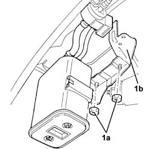
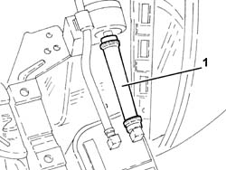

1080E62 pipe from fuel vapour separator to solenoid - r r
- Path
- Procedures > 10 ENGINE > 1080 EXHAUST EMISSION CONTROL SYSTEM > 1080E evaporation control system > 1080E62 pipe from fuel vapour separator to solenoid - r r
- Kind
- repair procedure (removal / refitting; the operation number is the code)
- Applies to
- engines: 2.5 V6, 3.2 V6; all production periods
- Interactive page
- https://sloeber94.github.io/elrnDB-a156/en/#/3237603
Applies to: engines: 2.5 V6, 3.2 V6; all production periods
 Removing
Removing
 Refitting
RefittingPosition the vehicle on the ramp.
Ensure that the ignition key is in the OFF position, then disconnect the battery negative terminal.
 | Name | Connector |
|---|---|---|
- | Battery |
Proceed with the removal 4450B10 Front WHEEL (one) - R.R. (Right side).
Proceed with the removal 7055B64 Engine compartment DUST shield in front wheel arch (one), left or right - R.R. (Right side).
Proceed with the removal 7055B42 Additional FRONT WHEEL ARCH (one), left or right - R.R. (Right side).
1. Undo the nuts (1a) fixing the active charcoal filter mounting bracket (1b) to the bodyshell, then lower it as necessary.

Applies to: engines: 2.5 V6, 3.2 V6; all production periods
1. Disconnect and remove the pipe from the active charcoal filter to the solenoid valve.

Applies to: engines: 2.5 V6, 3.2 V6; all production periods
Refitting
RemovingPlace the pipe from the active charcoal filter to the solenoid valve back in its housing and fasten it using the bands.
Place the active charcoal filter mounting bracket in its housing and secure it to the bodyshell using the nuts.
Proceed with the refitting 7055B42 Additional FRONT WHEEL ARCH (one), left or right - R.R. (Right side).
Proceed with the refitting 7055B64 Engine compartment DUST shield in front wheel arch (one), left or right - R.R. (Right side).
Proceed with the refitting 4450B10 Front WHEEL (one) - R.R. (Right side).
Remove the car from the ramp.